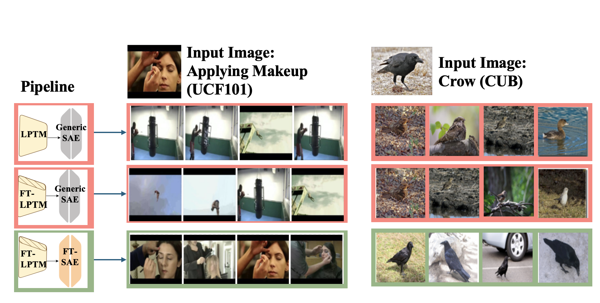
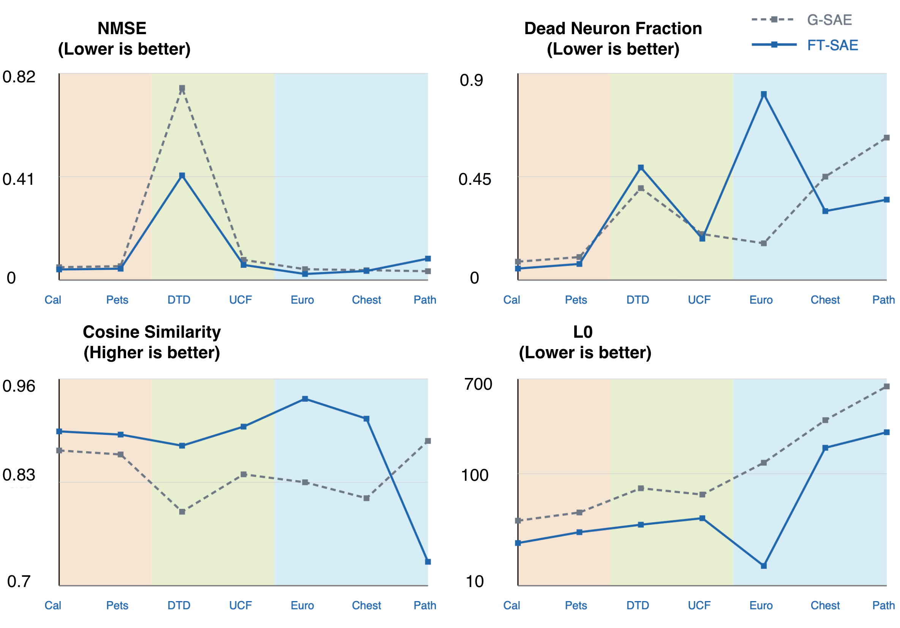

Base
CLIP
CLIP
Generic
SAE
SAE
Base CLIP reconstructed through an SAE trained on base, ImageNet-like activations.
ICML 2026 Mech Interp Workshop
When CLIP adapts, its interpreter may need to adapt too. We test when a generic sparse autoencoder stops being a faithful dictionary—and show that domain-matched SAEs recover much of the lost fidelity.
Why this matters
Sparse autoencoders decompose dense CLIP activations into sparse latent features. In practice, an SAE trained once on base-model activations is often reused after downstream adaptation. That convenience hides a strong assumption: the same feature dictionary must remain faithful after the model changes.
We examine that assumption for CLIP ViT-B/16 adapted with LoRA across visual domains ranging from Caltech101 and Oxford Pets to satellite and medical imagery. We measure reconstruction fidelity, sparsity, latent usage, class selectivity, and classification accuracy after SAE reconstruction.
Practical rule: SAE reuse is a hypothesis to test, not a guarantee inherited from the backbone architecture.
Qualitative evidence
Figure 1
Top-activating images for representative neurons. The SAE trained on adapted activations captures target-domain semantics more faithfully than reusing the generic SAE on either base or adapted representations.
Experimental design
The key comparison holds the LoRA-adapted CLIP encoder fixed and changes only the SAE used to reconstruct its activations.
Base CLIP reconstructed through an SAE trained on base, ImageNet-like activations.
The adapted encoder is interpreted with the unchanged generic dictionary.
The SAE is retrained on activations from the adapted model and target domain.
Core findings
The gains appear in both task performance and representation diagnostics, becoming especially clear on shifted texture, satellite, and medical domains.
92%
accuracy recovery
on EuroSAT after replacing the generic SAE with a domain-matched SAE.
.762→.415
NMSE on DTD
a 45.5% reduction in normalized reconstruction error.
125→15
active latents on EuroSAT
showing a far more compact, domain-specific representation.
+.298
DAMS on PathMNIST
while the standard monosemanticity score moves by only +.040.
Downstream accuracy
Best SAE-mediated result in each row is highlighted.
| Dataset | Shift | MMD | Adapted CLIP | FT + G-SAE | FT + FT-SAE | Recovery |
|---|---|---|---|---|---|---|
| Caltech101 | Near | .028 | 96.1 | 93.2 | 95.6 | 83% |
| Oxford Pets | Near | .029 | 93.5 | 89.7 | 92.7 | 79% |
| DTD | Mid | .090 | 72.0 | 66.8 | 71.1 | 83% |
| UCF101 | Mid | .126 | 77.6 | 71.3 | 75.9 | 73% |
| EuroSAT | Far | .291 | 90.8 | 85.9 | 90.4 | 92% |
| ChestMNIST | Far | .410 | 68.2 | 63.4 | 66.9 | 73% |
| PathMNIST | Far | .423 | 90.5 | 84.1 | 87.6 | 55% |
Recovery = (FT+FT-SAE − FT+G-SAE) / (FT − FT+G-SAE). Values are percentages.
Beyond accuracy
Across the seven main datasets, the domain-matched SAE generally reduces NMSE, improves cosine similarity, and sharply lowers L0 on shifted domains.
PathMNIST is the important exception: cosine similarity falls even as downstream accuracy rises. Useful medical-domain directions can move away from the geometry of base CLIP, so no single diagnostic is sufficient.

New metric
Standard monosemanticity can reward a broad catch-all latent if its top images happen to look coherent. The Domain-Aware Monosemanticity Score adds coverage and class-discriminative structure.
DAMS = EC [ α · CSSnorm + (1 − α) · FSS ]
Effective coverage penalizes dead and indiscriminate neurons.
Class separability measures between-class versus within-class structure.
Feature specificity rewards class-pure, low-entropy latent firing.
Conclusion
Generic SAEs should not be reused by default after LoRA adaptation. Check reconstruction, sparsity, downstream utility, and target-domain selectivity; retrain the SAE when those signals reveal a mismatch.